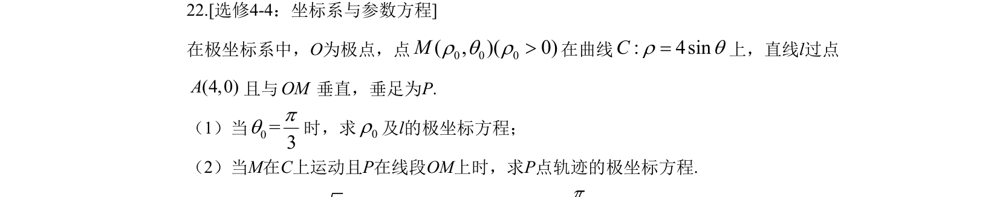
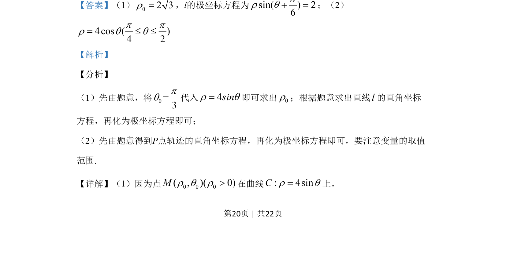

考点：极坐标 参数方程 轨迹方程

极坐标系中，点M在曲线ρ=4sinθ上，直线l过A(4,0)且与OM垂直，求垂足P的极坐标方程及轨迹。

📄 原 PDF 第 20 页：
素材/真题/吉林/2008-2024·（吉林）数学高考真题/2019年高考数学试卷（理）（新课标Ⅱ）（解析卷）.pdf
22.[选修4-4：坐标系与参数方程] 在极坐标系中，O为极点，点0 0 0( , )( 0)Mr q r>在曲线: 4sinCr q=上，直线l过点 (4,0)A且与OM垂直，垂足为P. （1）当0=3pq时，求0r及l的极坐标方程； （2）当M在C上运动且P在线段OM上时，求P点轨迹的极坐标方程.
【答案】（1）02 3r=，l的极坐标方程为sin( ) 26pr q =；（2） 4cos ( )4 2p pr q q= £ £ 【解析】 【分析】 （1）先由题意，将0=3pq代入4sinr q=即可求出0r；根据题意求出直线l的直角坐标 方程，再化为极坐标方程即可； （2）先由题意得到P点轨迹的直角坐标方程，再化为极坐标方程即可，要注意变量的取值 范围. 【详解】（1）因为点0 0 0( , )( 0)Mr q r>在曲线: 4sinCr q=上，